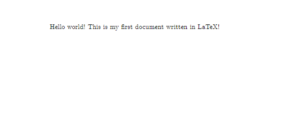
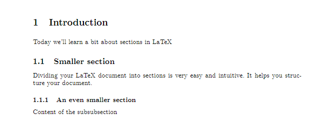
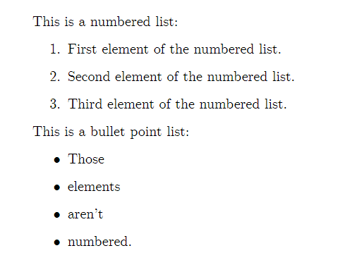
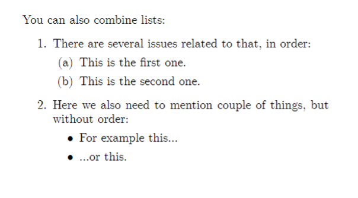

The First LaTeX Document
Introduction
In this section, we will cover the basics you need to know to create your first LaTeX document. This section will cover:
- Download and installation
- Sections and subsections
- Paragraphs, line breaks, spaces, and skips
- Text alignment
- Lists
- Font styles
- Table of contents
- Title pages
What is LaTeX?
LaTeX (pronounced lah-teck, or lay-teck) is a document preparation system, commonly used to prepare scientific publications, reports, presentations and many other types of documents. It can be seen as an alternative for other systems such as Microsoft’s Word and PowerPoint or Apple’s Pages and Keynote. As opposed to them, however, when preparing a document in LaTeX the user can only see the plain text they are writing, surrounded by markup tags – a fancy term for ‘commands’ telling LaTeX how it should format the document, similar to how HTML tags structure websites. Don’t be scared by those terms! It doesn’t have to do much with ‘real’ computer programming, all it takes to write in LaTeX is remembering few terms and the occasional use of Google search – after preparing the first few documents you can usually just use them as templates for new ones, limiting your memory load and effort to minimum.
Why should I choose LaTeX over my current document system?
There are several reasons to choose LaTeX over the document preparation system you are using right now. Firstly, LaTeX allows you to structure your document neatly, polish every detail to perfection, and re-use these settings for every document you prepare. Especially when it comes to creating tables, LaTeX performs much better in comparison with the ‘traditional’ document preparation systems. It is also great for referencing – when you include several tables and figures in your document and refer to them multiple times in different parts of the text, LaTeX will ensure that the order of their numbering is always correct and that you are always referring to the correct number. Moreover, it allows you to print a list of figures and tables in your document with just one line. LaTeX also comes with built-in bibliography capabilities, making citation and listing the resources you have used easier and more consistent than in the traditional document preparation systems.
While content is obviously much more important than appearance when it comes to academic writing, the clean look of a document written in LaTeX simply gives it a more professional feel. If you are a student, you can literally make your essay look like a top journal article, which can impress the person marking it, possibly improving his or her appreciation of your work. Speaking of articles, writing, LaTeX is gradually becoming a standard in the majority of scientific journals, so if you are planning to publish anything, it will come in very handy.
While there is a considerable learning curve when you start using LaTeX, investing some of your time into learning the basics will most certainly pay-off in your academic future. Hopefully, this module will help to make your first dive into the world of LaTeX as gentle as possible.
Download and Installation
Via Texstudio
The LaTeX system can be used through many applications, but we recommend using the freely available application called Texstudio – it makes writing LaTeX documents simpler, as it suggests relevant markup tags when you start to type them (similarly to Google suggesting you search phrases), has many shortcuts for often used tags, taking the additional load off your memory and underlines many common errors you might make while writing in LaTeX.
If you are using your own computer:
You first need to install the LaTeX engine which is responsible for creating your document. You can download this, according to your operating system from https://www.latex-project.org/get/
You will be using LaTeX through a GUI (Graphical User Interface) called TexStudio. To get Texstudio just go to https://www.texstudio.org/, click download and in the download section select the suitable version, depending on your Operating System.
If you are using a University of Warwick managed computer:
You can download Texstudio straight from the Software Centre, via the start menu.
Intro to “TeXstudio”
Via Texstudio…
The interface of the app is fairly simple and you don’t need to know much to get started. As opposed to traditional text editors, in LaTeX you first create and save a .tex file containing all your content with some so-called markup tags – you can think about the .tex file as a ‘cooking recipe’ for your final file. Your text, figures and bibliography are the ingredients and the markup tags act as cooking instructions (more on these in due course). The resulting document - which is always a pdf - can be viewed in the separate window by compiling the .tex file (click the double green arrow on the toolbar). “Compiling” is a fancy term to describe LaTeX simply following your commands and preparing the document as you requested in the tex file. By default, TeXstudio compiles the .pdf file in the same folder in which you have saved your .tex file. The entire procedure is reflected in TeXstudio’s interface – the screen consists of 3 main parts:
the .tex file editor on the left – here you create your document. the file viewer on the right – here you can view how your document looks after compilation – you can update the viewer by clicking the double green arrow (‘build & view’) the log and messages window at the bottom left – here you can see if any errors come up during the compilation of your file and if they do – in which line did they occur Both the viewer and the log window can be closed if you need more space for the tex editor.
The Toolbar
The toolbar allows you to:
- create a new file
- build it and view it – see any changes you have made in your document without compiling a new pdf
- compile the tex file into a pdf file, so you can read, print, or send the formatted version of your document
Minimum Structure for an article – your first document in LaTeX
To create a new document you need to open the .tex editor and type three simple markup tags, as shown below.

\documentclass{article}
\begin{document}
Hello world! This is my first document written in LaTeX!
\end{document}The first one, \documentclass{article} tells the LaTeX compiler that the document you are about to start is of the class ‘article’ – one of the many built-in document classes LaTeX has. For the purpose of introduction, we will focus on the article class. Other classes that can be used will be discussed towards the end of the course. Defining the class is necessary to create a LaTeX document, so always remember to do so in the first line of your .tex file! Typing anything before that will result in LaTeX producing an error when compiling and your document won’t be created. The class entails some default document parameters such as font, margins, paragraph spacings or page size. However, these can be changed for each document if desired – you’ll learn about that later.
The second one \begin{document} tells LaTeX that everything from this point is the content of the document. Everything entered before that tag – including the \documentclass{article} tag – is known as the preamble of the document – it is there where all the properties of the document are declared – these include parameters such as margins or page size, or special packages used for different purposes. You will learn about some of them very soon. The preamble can contain only LaTeX markup tags and commands. Typing plain text in the preamble will result in LaTeX compiler error and your document will not be created.
Finally, \end{document} indicates the ending of the content of the document – anything typed after that tag won’t be included in the document. Anything after that tag won’t appear in the document. Remember to always put \begin{document} before you start typing anything and \end{document} at the end. Otherwise your content won’t be compiled and won’t appear in the final .pdf file. Later you will see, that such \begin … \end structure is common for LaTeX and used to declare the boundaries of other text structures (or environment, as they are called in the LaTeX jargon), such as tables, bullet-point lists or figures.
Formatting Your Document
Sections and Subsections

\documentclass{article}
\begin{document}
\section{Introduction} Today we'll learn a bit about sections in LaTeX
\subsection{Smaller section} Dividing your LaTeX document into sections is very easy
and intuitive. It helps you structure your document.
\subsubsection{An even smaller section} Content of the subsubsection
\end{document}To structure your document, particularly when it’s a longer piece of work, it is often very useful to divide it into sections and subsections. LaTeX makes it quite easy and intuitive and automatically numbers your sections, so you can list them in the table of contents with one simple tag later. To create a new section simply add the \section{} tag and insert the title of your section between the curly braces. You can further structure your document into subsections or even subsubsections, as shown in the example above. LaTeX enumerates your sections by default in the order you entered them. This enumeration is useful when you create a table of contents. However, if you don’t want your section to have a number in front of it, simply add an asterisk between the tag and the curly braces, for example \section*{}. This also applies to subsections and subsubsections, as well as any LaTeX environments with default enumeration.
Paragraphs, line breaks and spaces
As opposed to Word or Pages, LaTeX is not a What You See Is What You Get (WYSIWYG) editing tool. It means that, as you already might have noticed, the document you see in your editor doesn’t exactly resemble the final compiled pdf document you create. This can be a bit confusing for a new user, especially when it comes to dealing with basic text structures, such as line breaks, page breaks or paragraphs. In this section, you’ll learn that those things are very simple to do in LaTeX as well.
Line breaks and page breaks

\section{Paragraphs, line breaks and spaces}
\subsection{Line breaks}
This is a sentence about something.
The second sentence is not in a new line, even though it appears to be so in the TeX editor. \\
However, this way we can get a new line in LaTeX Using markup tag 'newline' is also equivalent. \newline
Moreover, you don't need to even to use an enter on your keyboard \\ to start a new line. Although \\ it definitely makes your document structure easier to understand without compiling.
\subsection{Page breaks}
\clearpage
\subsection{Paragraphs}Line breaks
When writing a TeX document, pressing ‘enter’ on your keyboard will not simply begin a new line in the complied document, even though it might look like it in your TeX editor window. You always need to press “enter” twice to produce a new line in the output document. Alternatively, you can use \\ as the notation for starting a new line – you can enter it wherever you want in your tex file, and everything written after that will be put in a new line (even if you don’t actually use “enter” at all – however, this usually means making your ‘raw’ Tex document less understandable for yourself).
Page breaks
The tex file differs fundamentally from the document structure as its content is not divided into pages – instead, the file gets longer the more pages you add. In the compiled (i.e. final pdf) document, as soon as the volume of the content you set is larger than the space available within the current page, LaTeX starts a new page. However, often you might find yourself in a situation in which you want to start a new page before the text exceeds the capacity of the current one – a situation in which you would normally use the ‘page break’ button. In LaTeX that’s simply done by using a markup tag - \newpage or \clearpage. For the purpose of the introduction, you can consider them as equivalent, although they differ subtly in their treatment of objects such as tables or figures, which will be discussed later.
Paragraphs
In addition to line and page breaks, it’s useful to know how to start a new intended paragraph. In LaTeX that can be done simply by putting \par at the end of the current paragraph. Everything set after that tag will begin from a new line with indentation. If you want to avoid that indentation, simply add \noindent before beginning your new paragraph.

\subsection{Paragraphs}
It's common to divide longer pieces of text into paragraphs. In such situation, line break by itself won't suffice. \par
That's how you divide text into paragraphs in LaTeX. You can also make your new paragraph not indented. \par
\noindent That's how you do it. \\
This also begins as a new paragraph, as 'enter' was typed twice in the tex document.Spaces
If you want to add larger spaces in your text, either horizontally or vertically, LaTeX comes with some special commands. These generally do not seem to work in the online platform, so if you want to play around with these, please use TexStudio on your own computer.
For horizontal spaces, instead of pressing your space bar repeatedly (hint: it wouldn’t work in LaTeX). You can use the markup tag \hspace{}, specifying the size of the space you want to insert in the curly braces. This can be done in metric units (e.g. \hspace{2cm} or \hspace{20mm}), points (e.g. \hspace{5pt}) or inches (e.g. \hspace{1in}), amongst others.
If you want a part of your sentence to begin from the right margin (for example when putting a name on the left side and date on the right side in the same line at the end of a letter), you can use the markup tag \hfill. Everything after that will be aligned to the right margin.
Note that you cannot begin your line with \hfill to align your sentence to the right. That can be done using \flushright environment and is discussed in the next section on the text alignment.
\subsection{Spaces}
\subsubsection{Horizontal}
%hspace:
This sentence has a \hspace{3cm} large space in it.\\
%hfill:
From this point \hfill this sentence starts from the other margin.
\subsubsection{Vertical}
%vspace
That's is an example sentence about something.
\vspace{3cm} \\
There's a considerable distance between this sentence and the previous sentence.
%vfill
\vfill
\noindent This sentence, on the other hand, starts at the bottom margin of the page. When you write, it will gradually "grow" towards the last sentence before the vertical fill.The analogous markup tags are can be used for vertical spaces: \vspace{} allows you to specify the distance between the current and next line in the curly braces, and \vfill moves everything written after it to the bottom of the page.
Skips
Finally, you can add horizontal gaps without specifying the distance, by using “skip” markup tags. There are three variants available: \smallskip, \medskip and \bigskip, each associated with a different size of vertical space between lines. You can see how to use them in the example below.

\subsection{Skips}
So far we've discussed vertical and horizontal spaces.\\
There are other ways to add breaks between lines.\\
\smallskip
In this case, there's a distance of 3pts added between the lines. \\
\medskip
In this case, there's a distance of 6pts added between the lines. \\
\bigskip
Finally, in this case, there's a distance of 12 pt of space between the lines.\\Text Alignment
By default, LaTeX article class documents are aligned to left and justified (this means aligned along the left margin, and letter- and word-spacing is adjusted so that the text falls flush with both margins).
However, you can centre the text in your document easily, using the ‘centre’ environment.

By default, LaTeX article class documents are aligned to left and justified (i.e.aligned along the left margin, and letter- and word-spacing is adjusted so that the text falls flush with both margins).
\begin{center}
However, you can centre the text in your document easily, using the 'center' environment. Then, the text has an even gap between each side of it from each margin.\end{center}
\begin{flushleft}
You can also align your text to the left. In such situation, the text won't be justified as a it would be by default in LaTeX article class document. \end{flushleft}
\begin{flushright}
By analogy, the text can also be aligned to the right, as you can see in this final example.\end{flushright}Similarly to text editors you might be used to, LaTeX also allows you to flush the text left, so it is not aligned to both sides, but only to the left (a default setting in Microsoft Word) or flush it right, so it’s only aligned to the right.
Lists
While creating a document, you’ll sometimes find yourself in need of creating a bullet point or numbered list. In LaTeX it is quite simple to enter such a list – all you need to do is tag the beginning and end of the list section with either \begin{enumerate} and \end{enumerate} for numbered lists or \begin{itemize} and \end{itemize} for bullet-point lists. Each element of the list should begin with \item markup tag, as seen in the example.

This is a numbered list:
\begin{enumerate}
\item First element of the numbered list.
\item Second element of the numbered list.
\item Third element of the numbered list.
\end{enumerate}
This is a bullet point list:
\begin{itemize}
\item Those
\item elements
\item aren't
\item numbered.
\end{itemize}
You can also combine lists:
\begin{enumerate}
\item There are several issues related to that, in order:
\begin{enumerate}
\item This is the first one.
\item This is the second one.
\end{enumerate}
\item Here we also need to mention couple of things, but without order:
\begin{itemize}
\item For example this...
\item ...or this.
\end{itemize}
\end{enumerate}Font Styles
Generally, LaTeX uses the Computer Modern font as default. Sometimes, you mind find it useful to modify its style or size. To modify the style of the font you are currently using you use special markup tags. For the bold font, you simply type \textbf{text you want in bold}. Similarly, for italics you write \textit{text you want in italics}. Finally, for underlined text, you use \underline{text you want underlined}.
\noindent This is how you write \textit{italics}, \textbf{bold} and \underline{underlined} text in LaTeX. \\
\\
You can also {\footnotesize decrease} or {\Large increase} the font for couple of words mid-sentence. \\
\\
What's even more useful, you can changed the font size of an entire area:\\
\begin{footnotesize}
This here is small text.
\end{footnotesize} \\
\begin{large}
This here is large text.
\end{large} \\
And this is the default size again!To change the font size from the default (which is 10pt for the document class ‘article’), you can use markup tags describing the size you want. This can be done either mid-sentence or for entire area, as seen in the figure above.
Table 1 demonstrates the effect that different LaTeX commands have on the font in relation to the standard font size that has been set for the document. To make things a little bit easier for you, TeXstudio has dedicated buttons for font styles, similar to those you may be familiar with from text editors you have used, such as Microsoft Word – you can find them located left of the TeX file editor.
| If standard font size is | 10pt | 11pt | 12pt |
|---|---|---|---|
| These commands change it to … | |||
| \tiny | 5pt | 6pt | 6pt |
| \scriptsize | 7pt | 8pt | 8pt |
| \footnotesize | 8pt | 9pt | 10pt |
| \small | 9pt | 10pt | 11pt |
| \normalsize | 10pt | 11pt | 12pt |
| \large | 12pt | 12pt | 14pt |
| \Large | 14pt | 14pt | 17pt |
| \LARGE | 17pt | 17pt | 20pt |
| \huge | 20pt | 20pt | 25pt |
| \Huge | 25pt | 25pt | 25pt |
Table of Contents
To add a table of contents, that summarizes all the sections and subsections of your document in an orderly manner, along with corresponding page numbers, simply use the \tableofcontents markup tag. The table of contents will appear in the place you decide to put the tag, regardless if it’s the beginning, middle or end of your document.
\begin{document}
\tableofcontents
\newpage
\section{Introduction}
Today we'll learn a bit about sections in LaTeX.
\subsection{Smaller section}
Dividing your LaTeX document into sections is very easy and intuitive. It helps you structure your document.
\subsubsection{An even smaller section}
Content of the subsubsection.
\newpageTitle Page
Apart from the document class, the preamble allows you to specify other document details, such as the author, date and title among others. These can later appear in the title page if you decide to put it in the document. Similarly to table of contents, the title will appear wherever you decide to place its markup tag, regardless of the location in the document.
\documentclass{article}
\title{Sample LaTeX document}
\date{20 April 2019}
\author{John Doe \\
Department of Politics and International Studies \\
University of Warwick}
\begin{document}
\maketitle
\end{document}Commenting your code
When designing a complicated document, it’s often helpful to make notes about future ideas for design improvements, places to enter figures or tables that haven’t been prepared yet and others. While such notes are useful, you may not necessarily want them to appear in your complied document. For example, imagine you are sending someone a draft of an article to review. While it is still work in progress with many notes and comments, you often don’t want the reader to see them, as it may make reading the document harder. For that sort of situations, LaTeX comes equipped with a special symbol ‘%’. Whenever it is entered. anything after it until the beginning of a new line in the tex file (not in the compiled document) will not be compiled – TeXStudio notifies you of that by displaying the text after % in grey colour. Try it out yourself!